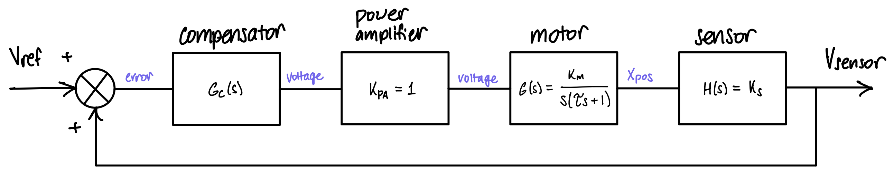
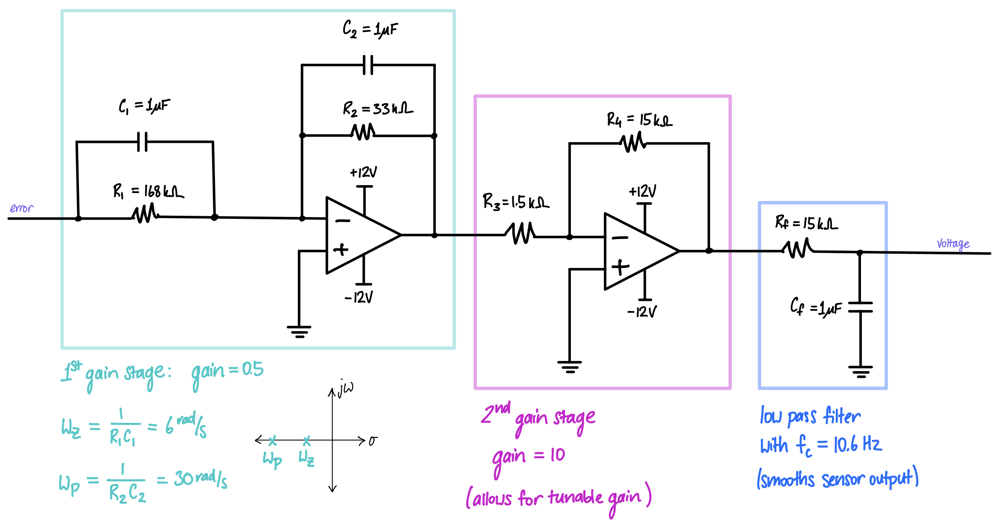
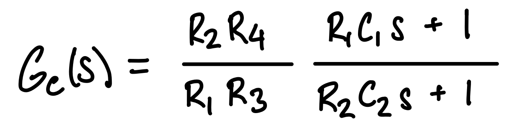

Duck Car Compensator Design - ENGS 26
The goal of the compensator is to adjust the duck car system’s transient response to achieve a short stopping distance with no overshoot and no oscillations.
Block diagram of closed-loop duck car system

Compensator Implementation Circuit

Compensator transfer function

Breadboarded circuit